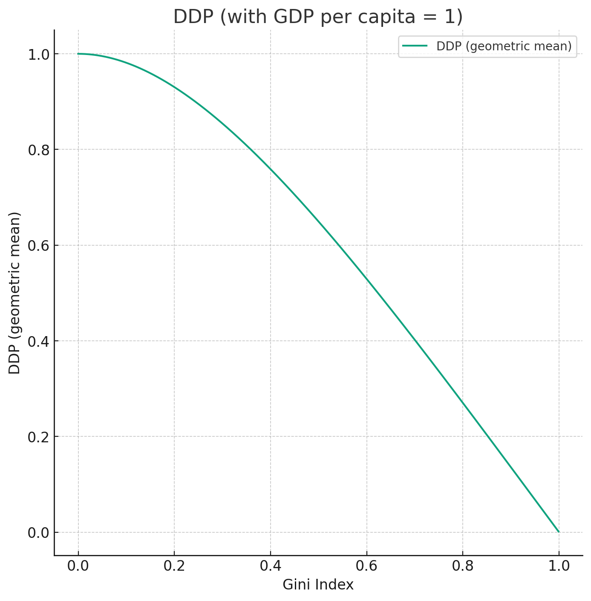
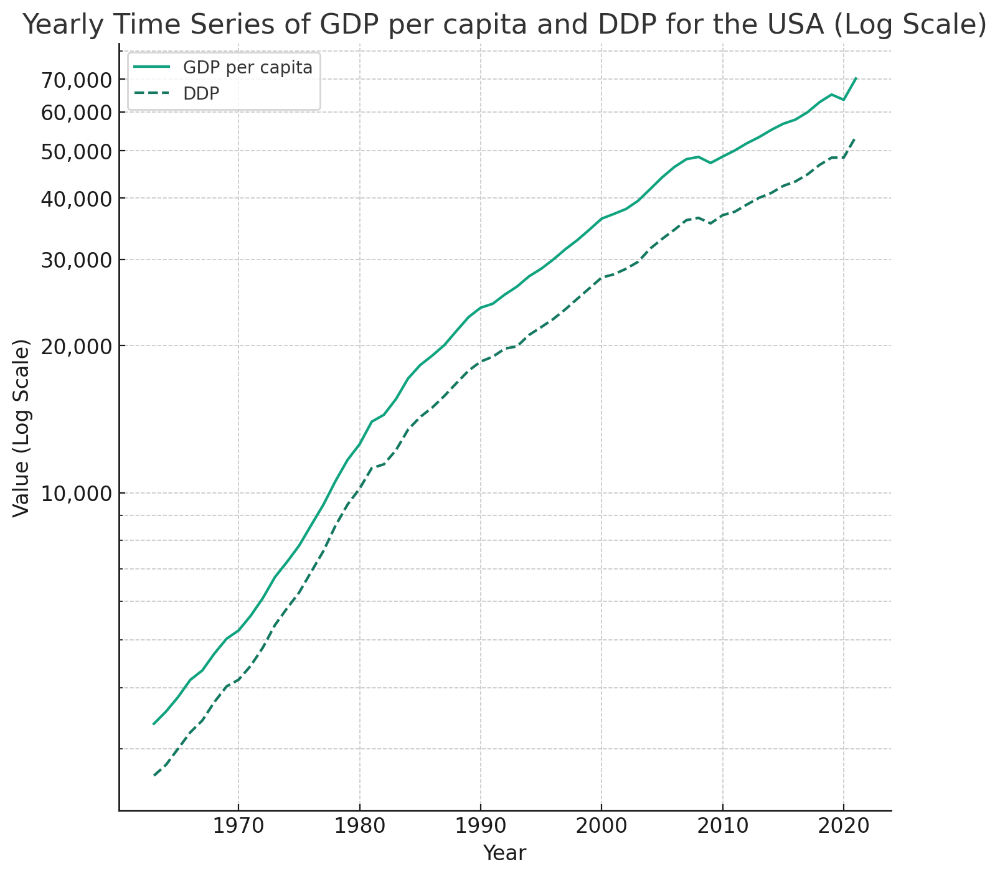

DDP vs GDP
I have read an interesting article about the Democratic Domestic Product (DDP)1. There are many disputes and critiques regarding GDP, so I refer you to the details in this article. The main point is that GDP is not a good measure of individual well-being since its growth is dominated by a few of the richest people, companies, and the government. While Elon Musk may not care about a few billion dollars in profit or loss when he acquired Twitter, my personal well-being dramatically declined when my $500 AirPods Pro were stolen before Thanksgiving.
The solution, as the article proposes, is quite simple -- taking the logarithm, which is almost an instinct for me as a data scientist. Since GDP per capita is simply the average of everyone's spending, why not use the geometric mean instead? Let $x_i$ be the spending of an individual. GDP per capita is $$ \text{GDP} = \frac{1}{n} \sum_{i=1}^n x_i, $$ while DDP is $$ \text{DDP} = \exp \left( \frac{1}{n} \sum_{i=1}^n \log(x_i) \right). $$ The intuition is straightforward: the logarithm emphasizes the smaller numbers and suppresses the extremely large ones. So my AirPods Pro is about $\log(500) = 6.215$, not that far from Elon Musk's 1 billion becomes $\log(10^6) = 20.723$. Most importantly, the logarithm is a natural measure of utility, which was pointed out by Daniel Bernoulli more than 300 years ago.
Moreover, the logarithm converts multiplication into addition. So, the log improvement of DDP is also the average of an individual's utility improvement: $$ \log \left( \frac{DDP_t}{DDP_{t-1}} \right) = \frac{1}{n} \sum_{i=1}^n \log \left( \frac{x_{i,t}}{x_{i,t-1}} \right). $$
A Simplified Method for DDP Calculation: GPD per capita and Gini Index
However, there are two major problems with DDP:
- It is not easy to compute. In one paper, the authors used income quantiles to estimate the distribution of $x_i$ and approximate DDP.
- Its relationship to GDP is not obvious. The authors of the original paper used a geometric Brownian motion2 to model DDP growth, which, some may argue, is neither continuous nor stationary, and most of all, should be fat-tailed. To understand this, think about someone who just spent ten years' savings to purchase a house.
Here is a much easier way to compute DDP:
- Assume individual GDP contribution follows the Pareto distribution: $X \sim \text{Pareto} (\alpha, x_m)$.
- The Gini index of the Pareto distribution is simply: $$ \text{Gini} = \frac{1}{2\alpha - 1} $$
- The average of the Pareto distribution corresponds to the GDP per capita: $$ \text{GDP per capita} = \frac{\alpha}{\alpha - 1} x_m $$
- The DDP, or the geometric mean of the Pareto distribution: $$ \text{DDP} = x_m e^{\frac{1}{\alpha}} $$
- Finally, putting everything together: $$ \text{DDP} = \text{GDP per capita} \times \left( \frac{1 - \text{Gini}}{1 + \text{Gini}} \right) \cdot e^{\frac{2\text{Gini}}{1 + \text{Gini}}} $$
This formula is simple and clear: it can be viewed as GDP per capita adjusted by a function of the Gini index, which measures inequality. The Gini index adjustment is 1 in the case of full equality and 0 in the case of maximum inequality, as seen in the figure below.

Both the Gini Index and GDP per capita data are available from The World Bank. Here are the historical values of DDP vs GDP for the USA:

Final Thoughts
Similar to GDP, there are numerous debates about the Gini index's effectiveness as a measure of inequality. The assumption of a Pareto distribution might be overly simplistic. A more nuanced approach could involve applying the generalized Pareto rule and extreme value theory to better fit the tails of wealth and spending distributions, thereby addressing inequality more accurately.
Ultimately, no single metric can completely encapsulate the complexity of economic activities. Overemphasis on optimizing a single metric can lead to disastrous outcomes. Take DDP as an example: it could be manipulated through a simplistic redistribution of wealth, which might create an illusion of economic growth without any real improvement in economic conditions.
-
Based on the geometric Brownian motion model, the gap between (log) GDP and (log) DDP is a linear function of time $\frac{\sigma^2}{2} t$. In fact, any Lévy process with a finite and well-defined moment generating function has a linear growth rate over time, based on the Lévy–Khintchine representation: $$ \log E[e^{X_t}] = t \left( \mu - \frac{\sigma^2}{2} + \int (e^{x} - 1 - x 1_{|x|<1}) \nu(dx) \right) $$ where $\nu$ is the Lévy measure. ↩